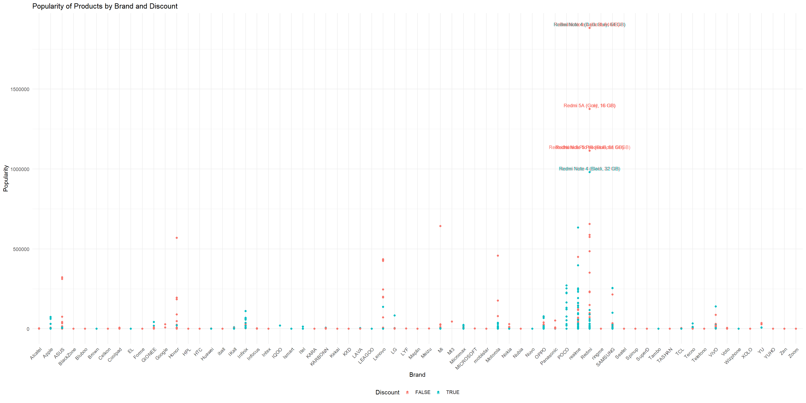

Code
# Use this R-Chunk to import data.
phones = read.csv("https://query.data.world/s/mb5oi6cimqlpyf6bzpwvrgrr6id4pq?dws=00000")Phones have always had a big impact on how people process the world. By understanding the brands with the highest popularity, we can understand their influence as well. By understanding popularity, we are capable of understanding what brand is more highly valued in society.
# Use this R-Chunk to import data.
phones = read.csv("https://query.data.world/s/mb5oi6cimqlpyf6bzpwvrgrr6id4pq?dws=00000")# Use this R-Chunk to clean & wrangle your data.
phones$Brand <- as.factor(phones$Brand)
phones <- phones %>%
mutate(Discount = Discount.Percentage != 0)
phone <- select(phones, Product.Name, Brand, Number.Of.Reviews, Star.Rating, Discount)
filtered_text <- phone %>%
filter(Number.Of.Reviews * (2 * Star.Rating) >= 0.5 * max(Number.Of.Reviews * (2 * Star.Rating)))# Use this R-Chunk to plot & visualize your data.
ggplot(phone, aes(x = Brand, y = Number.Of.Reviews * (2 * Star.Rating), color = factor(Discount))) +
geom_point() +
geom_text(data = filtered_text, aes(label = Product.Name), vjust = -0.5, size = 3) +
labs(title = "Popularity of Products by Brand and Discount",
x = "Brand",
y = "Popularity",
color = "Discount") +
theme_minimal() +
theme(axis.text.x = element_text(angle = 45, hjust = 1),
legend.position = "bottom")
From this data that was collected, we see that the brand that produces the most popularity is Redmi. This brand produces a similar amount of discounted and not discounted phone products. Not only that, but the higher popularity products were around the same value discounted or not. From this we understand that Redmi has the highest value in society and the most impact on it.